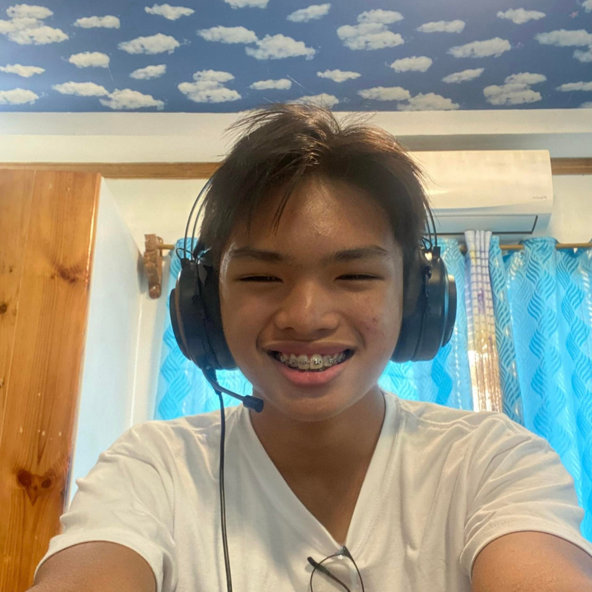
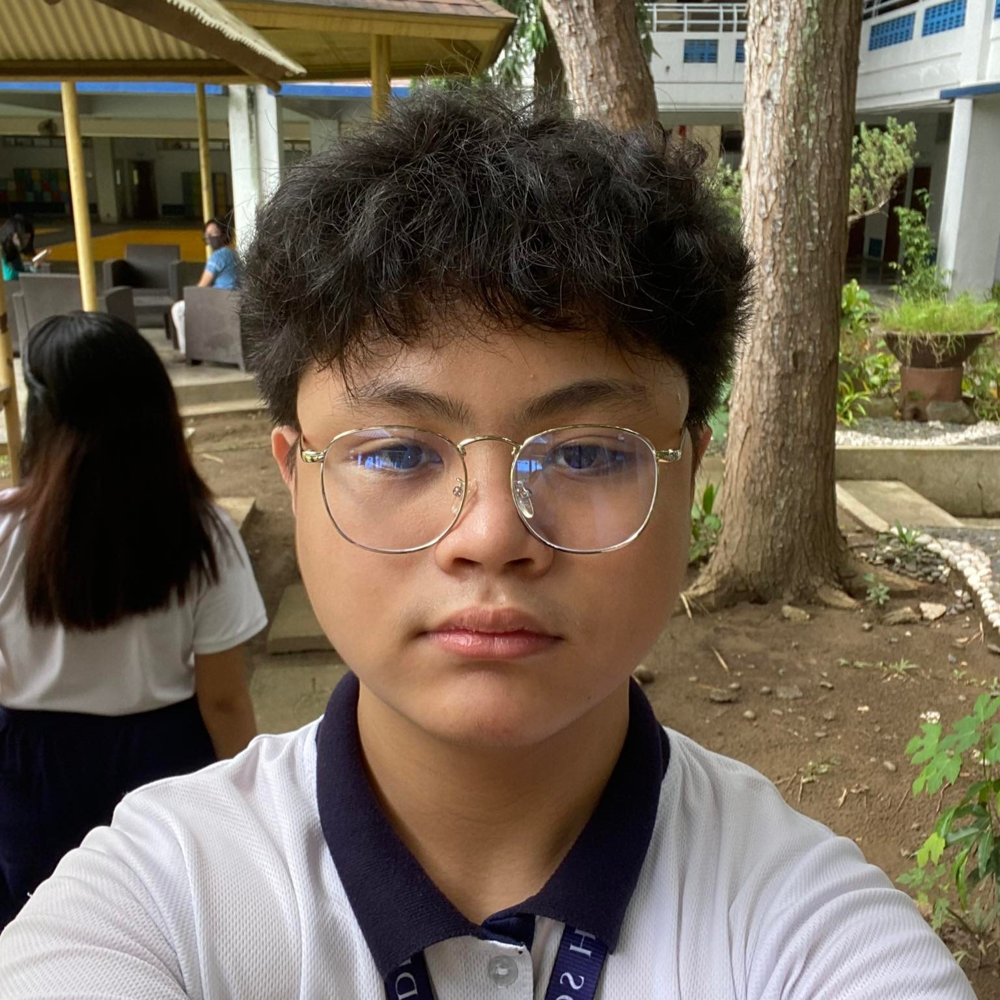

This project is very important since it can improve the cleanliness and hygiene of the people of the Badjao community. This is key because as we have seen the community has struggled with many issues including their hygiene and trash disposal methods, and our project can help them improve on these skills significantly and help their homes be much safe and cleaner for life to flourish, by assisting them in learning methods such as clay-go or implementing the use of bins for specific types of waste, which will not only make things easier to organize, but some of the organized garbage can be recycled and made anew.
As said by the residents, trash that is spreading around the community were from the ocean and sometimes because of floods. Since they're living near the ocean, it is expected that there would be water/unnecessary things coming their way such as trash like plastic bags, pet bottles, wrappers, and so forth. Sometimes, it's the flood that brings and leaves trash in the community. This issue is really important and needs to be taken action. Due to the fact that cleanliness is important especially in a community wherein a lot of people stay and most of them are prone to diseases. We suggest that we should be more responsible with our trash, not only the people living in their community but also those people who are careless with their own garbage. Cleanliness also helps reduce pollution, protects endangered species, and preserves our natural resources. That's why this is part of our mission/goal because we know how hard it is for them to encounter such problems and we know that it'll become a havoc to them, especially with their health. As an ecotenean, it is also our pleasure to help others regarding problems like this. It is also a big contribution to our mother nature, for we have been causing the same troubles throughout.

Job Bendanillo is a Student in Ateneo De Davao Junior High School and a member of Group 2B St. Robert Bellarmine.
He is a helpful member who Prioritize his tasks and manages his time well. He aims to be a member who helps the
leader as a group and accomplish the task. Along with his group, brings joy and aspiration to our Badjao Community.
He and his group aims to help the community maintain cleanliness and
help kids who are incapable to experience the things they should.

Brent Palo is a member of group 2B St. Robert Bellarmine Ateneo de Davao University. He is very friendly and helpful
to the people around him. He likes to play sports like basketball for fun. He can help bring joy to the badjao community.
Along with his group, brings joy and aspiration to our Badjao Community. He and his group aims to help the community maintain
cleanliness and help kids who are incapable to experience the things they should.